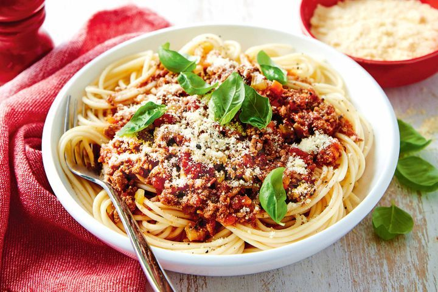

Spaghetti Bolognese

A hearty and cost effective classic!
Ingredients
- 1 tbsp olive oil
- 4 rashers smoked streaky bacon, finely chopped
- 2 medium onions, finely chopped
- 2 carrots, trimmed and finely chopped
- 2 celery sticks, finely chopped
- 2 garlic cloves finely chopped
- 2-3 sprigs rosemary leaves picked and finely chopped
- 500g beef mince
- 2 x 400g tins plum tomatoes
- small pack basil leaves picked, ¾ finely chopped and the rest
left whole for garnish
- 1 tsp dried oregano
- 2 fresh bay leaves
- 2 tbsp tomato purée
- 1 beef stock cube
- 1 red chilli deseeded and finely chopped (optional)
- 125ml red wine
- 6 cherry tomatoes sliced in half
- 75g parmesan grated, plus extra to serve
- 400g spaghetti
Instructions
- Put a large saucepan on a medium heat and add 1 tbsp olive
oil.
- Add 4 finely chopped bacon rashers and fry for 10 mins
- Reduce the heat and add the 2 onions, 2 carrots, 2 celery sticks,
2 garlic cloves and the leaves from 2-3 sprigs rosemary, all
finely chopped, then fry for 10 mins. Stir the veg often until
it softens.
- Add 2 tins plum tomatoes, the finely chopped leaves from ¾ small
pack basil, 1 tsp dried oregano, 2 bay leaves, 2 tbsp tomato
purée, 1 beef stock cube, 1 deseeded and finely chopped red
chilli (if using), 125ml red wine and 6 halved cherry tomatoes.
Stir with a wooden spoon, breaking up the plum tomatoes.
- Pour the mixture into the prepared tin and bake for about
50 mins, or until cooked through. Check the loaf at 5-min
intervals from around 30-40 mins in the oven by testing it
with a skewer (it should be able to be inserted and
removed cleanly), as the time may vary depending on the
shape of your loaf tin.Bring to the boil, reduce to a gentle
simmer and cover with a lid. Cook for 1 hr 15 mins stirring
occasionally, until you have a rich, thick sauce.
- Add the 75g grated parmesan, check the seasoning and stir.
- When the bolognese is nearly finished, cook 400g spaghetti
following the pack instructions.
- Drain the spaghetti and either stir into the bolognese sauce,
or serve the sauce on top. Serve with more grated parmesan,
the remaining basil leaves and crusty bread, if you like.